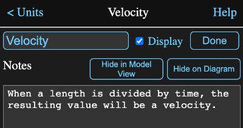

Any Math Minion tool can have notes associated with it. To the right of the name and display fields at the top of every tool information view there is a button labeled Notes that will open the notes view.
You can enter any text you want into the large text area at the bottom of the notes view. Tapping on the Done button, which has now replaced the Notes button, will assign the notes to the tool and return to the normal information view.
If you switch to another tool by tapping on the diagram without tapping on either the Done button or one of the buttons immediately below it, any changes you made to the note text will be discarded.
If you want the notes to appear in the Model's information view, tap on the Show in Model Html button. The button label will change to Hide in Model Html and when you view the model's informaton view, the notes will appear above the tool's display. That assumes that the tool has its Display box set, but even if isn't the note will still appear.
This means you can add text to the view by just having a note displayed, without the tool itself being displayed.
If you wish to have your notes appear on the diagram, tap on the button labeled Show on Diagram. The notes will appear on the diagram below the tool icon and the button will change to Hide on Diagram as in the image above.
Note that if the note is very long, it might be truncated on the diagram.
If a tool has notes and they are not shown on the diagram, there will still be the word Notes below the icon to indicate the tool has hidden notes. Whether the notes are displayed or just the Notes indicator, tapping on the top of the diagram notes will display them in a pop up.
You can access the notes for any tool in a formula with the notes parameter. For example the formula:
velcocity.notes
would return a string value containing the notes for tool velocity.